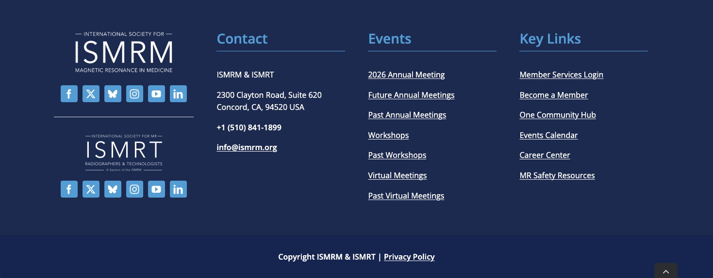

Workflows
This page outlines the protocols and workflows for managing our chapter’s website, to support clear, open, and transparent operations for webite managers and contributors, ensuring consistency and continuity in maintaining the website.
Admin Portal
- Go to the admin login page: https://bic.ismrm.org/wp-login.php
- Enter your credentials.
If you are unsure of your credentials or experience login issues, contact the ISMRM IT & Web Coordinator.
- After logging in, you will see the WordPress dashboard. Use the left-hand menu to navigate to Pages, Posts, or other sections as needed.
Header and Footer
The header and footer are maintained by the ISMRM central office.


- Minor customisations to the header and footer are allowed in principle, but the core styling must remain intact.
- The section under the “BIC Menu” is editable. Any proposed changes should be reviewed in coordination with the ISMRM central office to ensure compliance with the core styling.
Navigation Bar
The chapter navigation bar is maintained by the ISMRM central office.
The navigation bar replicates the BIC Menu in the Header section to provide easy access to chapter pages.

- The navigation bar is not sticky, i.e., it does not remain fixed while scrolling.
- On narrow screens or mobile devices, the navigation bar collapses into a hamburger menu (≡).
- Any proposed changes should be reviewed in coordination with the ISMRM central office to ensure compliance with the core styling.
Bylaws
- The Chapter’s bylaws are revised by the Executive Committee. Final approval and ratification typically occur at the Chapter’s Annual Meeting.
- The official version of the bylaws is hosted on the Chapter’s website (WordPress). Previous versions are archived under the ISMRM site (
ismrm.org/british/). Queries for archived copies can be directed to the ISMRM IT & Web Coordinator.
- After ratification, the Chapter President (or designated officer) prepares the final PDF.
- Upload the PDF to the website’s media library and copy the URL for the newly uploaded version.
- Update the link on the Chapter’s website to point to the latest version.
- Do not delete old versions, as this may cause other links to break.
Landing Page
Announcements
The most common type of announcement is the Chapter’s Annual Meeting.
Dates and venues for pre-conference workshops may differ from the main meeting and should be clearly highlighted to avoid confusion.
- Confirm key details with the annual meeting organiser, including:
- Meeting dates
- Venue information
- Any pre-conference workshops
- The dedicated meeting website, usually hosted by the organising institution
- Draft an announcement for the meeting chair to review and approve.
- Keep the content brief and concise.
- signpost visitors to the dedicated meeting website for further details and updates.
Featured Education Talks
This section on the landing page contains:
- A hyperlink to the MR Education Series page.
- A media slider displaying cover images from recent education talks.
For instructions on maintaining the MR Education Series page, see MR Education Series.
Please follow the steps below to update the media slides on the landing page.
Use your browser’s Developer Tools to locate the cover image element and the corresponding Vimeo video link for the new education talk.
Save a copy of the cover image offline. Rename the image file using the following convention:
mr-education-{YYYY}-{MM}-{DD}-coverThe following snippet may be useful to serve as a template for this workflow:Image x mr-education-{YYYY}-{MM}-{DD}-cover URL: https://player.vimeo.com/video/<vimeo-id>Upload the cover image to the media library.
In the media slides element, create a duplicate of an existing media slide entry.
Replace the existing image with the new cover image.
Update the embedded video URL with the correct Vimeo link.
Prize, Awards and Funding
To be added.
Past Chapter Meetings
This section is scheduled for removal. Users are directed to the Events page via the BIC Menu and Navigation Bar.
- Include bullet points for quick access to past Chapter Meeting Programmes and Postgraduate Symposium Programmes.
- A hyperlink at the end provided access to the Events page to access the full events archive.
Committee Members
Current Members
For each committee member, gather the following:
- Photo (square format preferred)
- Full name
- Executive Committee position
- Primary affiliated institution and City
Before publishing, confirm all details with each member individually.
Past Members
- Review the Chapter’s newsletters. These are the primary source for past committee members.
- If information is missing or unclear, reach out to the chapter’s Executive Committee.
- Arrange members in reverse chronological order, i.e. most recent first.
- Use the format: Full Name, Years Served. For example, John Doe, 2024-2025.
- For the following roles, include additional details in parentheses:
- Annual Meeting Organiser: add the meeting location. For example: John Doe, 1995 (Oxford)
- Industrial Representative: add the company. For example: Jane Doe, 2000 (Company)
Funding and Recognition
Bill Moore Lecture Recipients
- Refer to the programme of the Chapter’s Annual Meeting, where the Bill Moore Lecture recipient is typically listed.
- Record the recipient’s name and the city of the annual meeting.
- If any of the details are unclear, confirm with the Chapter’s Executive Committee.
Mansfield Research Innovation Award
This is not the Siemens Mansfield Innovation Award presented at the ISMRM annual meeting.
- Check the Chapter’s Newsletters - this is typically where the winners are announced.
- If affliation information is missing, start with an online search (e.g., institutional websites, LinkedIn, PubMed) to verify the awardees’ affiliations.
- For older or unclear entries, reach out to the chapter’s Executive Committee for further details.
Events
This page serves as an archive of past events hosted or sponsored by the Chapter.
Chapter Annual Meetings
The primary liaison for maintaining this section is the Annual Meeting Chair.
After the annual meeting has concluded, confirm the following details with the meeting chair:
- Meeting dates
- City and country
- Programme for pre-event workshops (if applicable)
- Final version of the annual meeting programme
Postgraduate Symposia
The primary liaison for maintaining this section is the Student Representatives.
After the postgraduate symposium has concluded, confirm the following details:
- Location of the event (city or virtual)
- Final version of the symposium programme
Sponsored Events
The primary liaison for maintaining this section is the recipient of the New Initiative & Public Engagement Fund.
After the event has concluded, confirm the following details:
- City and country
- Final version of the event programme
MR Education Series
Subscribe to the mailing list to receive announcements for education series.
Schedule
Schedules for upcoming education series are usually announced in the following months:
| Series | Month |
|---|---|
| Summer | May to June |
| Autumn | September |
| Winter | January |
During the series
- Weekly reminders with the speaker and topic are sent via the mailing list.
- The schedule may change, so please check for updates.
End of series
Send a reminder email to the person responsible for the video recordings, asking them to share the files with the IT & Web coordinator at the ISMRM central office.
The IT & Web coordinator will upload the recordings and share the video links once they are available.
Jobs
- The chapter does not maintain its own job board. At present, visitors are redirected to the ISMRM & ISMRT Career Center (https://www.ismrm.org/career-center/).
Contacts
The Chapter’s general enquiries email address is bicismrm@ismrm.org. Messages sent to this address are automatically forwarded to the current Chapter President. The Web Management Team can provide technical support related to the mailbox if needed, but does not oversee its content or day-to-day management.
- Ensure that the information on Contacts page is kept up to date.
- Ensure that the general contact email (bicismrm@ismrm.org) is used consistently across all communication platforms.